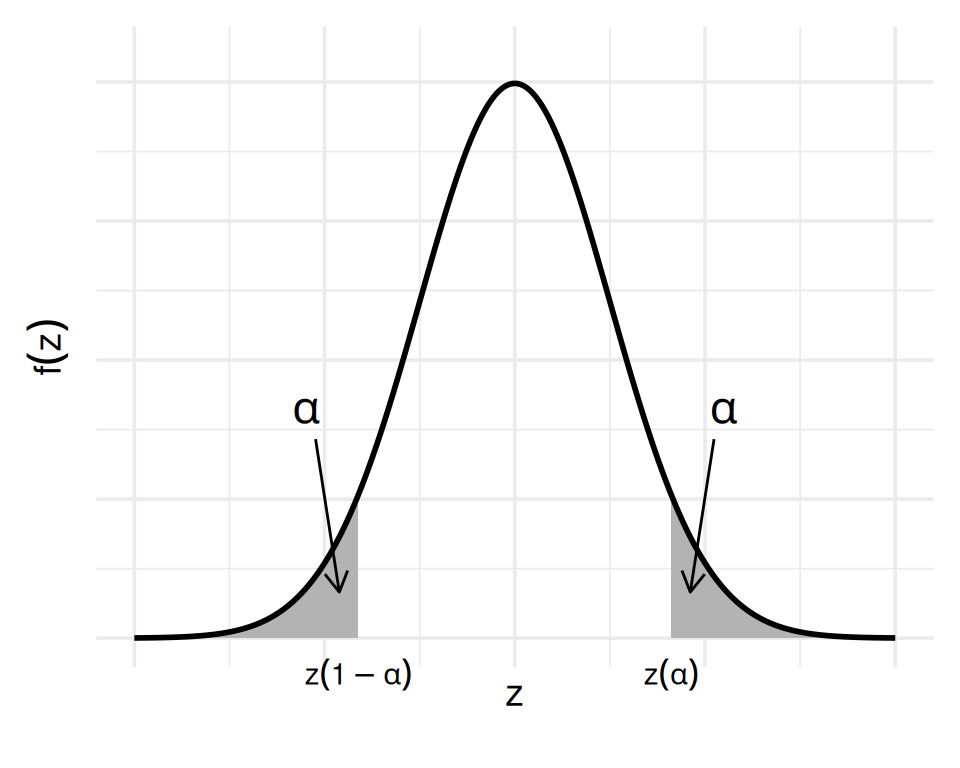
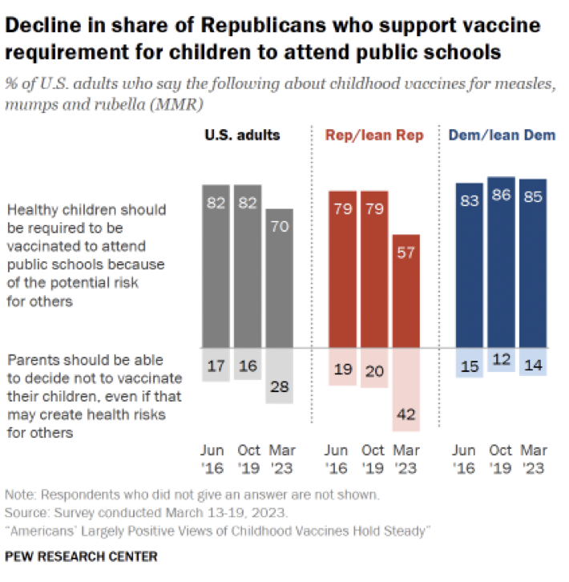
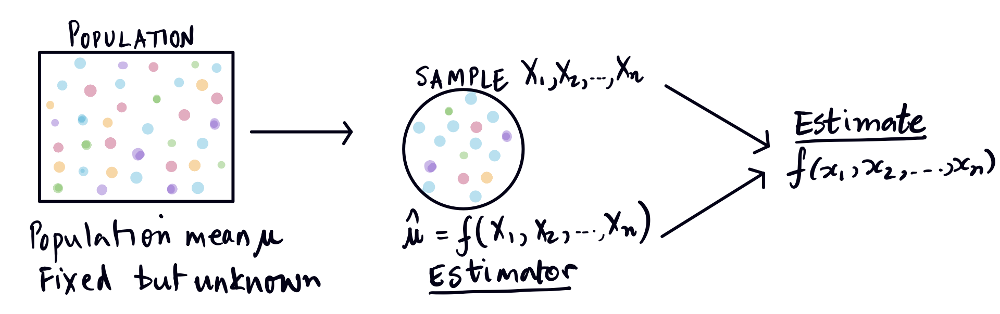
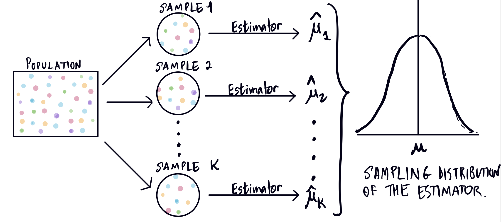
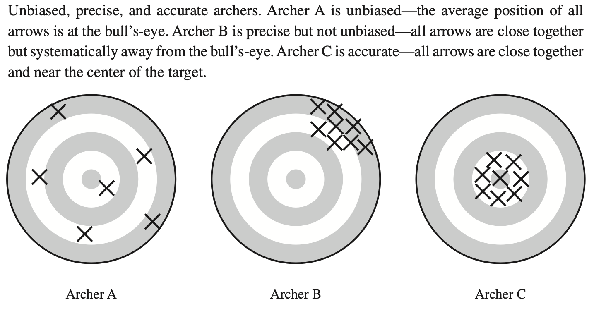

Survey Sampling
Introduction
In this chapter, we look at the topic of survey sampling, which involves a particular type of inference, saying something about a population, given an observed subset of the population. By now, we are all very used to sample surveys, such as presidential approval polls, and polls on various issues such as: What percentage of Republicans support vaccine requirements for children to attend public schools. Pew Research investigated this question a couple of years ago, which they attempted to answer by taking a sample of Republican voters, and then drawing a conclusion about the population of Republican voters.

News outlets are constantly publishing polls, which are certainly not all the same quality. The famous FiveThirtyEight site, started by Nate Silver, is defunct now, but it was famous for its pollster ratings. You can read about their methodology and here are their rankings from a couple of years ago.
In our course, we learn a little bit about survey sampling, and if you like it, you might think about taking Stat 152 the next time it is offered in our department. Chapter 7 in our text discusses the probabilistic sampling techniques, in that each population unit has a specified probability of being included in the sample, which consists of randomly selected units from the population. Note that we make no distributional assumptions in this chapter. We will restrict our study to Simple Random Samples: every population unit has the same probability of being selected, and each particular sample of size \(n\) has the same probability. That is, if the size of our population is \(N\), then each of the \(\displaystyle \binom{N}{n}\) possible samples of size \(n\) taken without replacement has the same probability.
Warm up problem
Consider the following problem:
You have a box containing 5 cards. Four of the cards are labeled with the number \(0\) and one of them is labeled with the number \(1\).You pick two cards at random with replacment. Let \(Y\) represent the average of the two cards.
- What is the distribution of the random variable \(Y\)? (Hint: Define \(X\) to be the sum of the two cards. What is the distribution of \(X\)?)
Check your answer
\(X \sim Bin(2, \dfrac{1}{5})\), and \(Y = X/2\).
\(P(Y = 0) = P(X = 0) = \dfrac{16}{25}\)
\(P(Y = \dfrac{1}{2}) = P(X = 1) = \dfrac{8}{25}\)
\(P(Y = 1) = P(X = 2) = \dfrac{1}{25}\)
- Compute \(E(Y)\) and \(\mathrm{Var}(Y)\).
Check your answer
\(E(Y) = \dfrac{1}{5}\) and \(\mathrm{Var}(Y) = \dfrac{2}{25}\).
Now what if I sample without replacement? Let \(Z\) be the average of the two tickets in this case. What is the distribution of \(Z\)?
Check your answer
Now the sum is Hypergeometric. (What are the parameters of the distribution?)
You can work out that \(P(Z = 0) = \dfrac{3}{5}, P(Z = \dfrac{1}{2}) = \dfrac{2}{5}\).
Why can’t \(Z\) be \(1\)?
Definitions and vocabulary
The figure below, adapted from Lohr’s book on sampling, shows that we have to be careful regarding the scope of our conclusions. We can only generalize from results from our sample to the sampled population, even if the target population (the population we are interested in) is something different!

Population: the complete set of individuals or entities that we are interested in. We usually only have data on a subset of them (a sample). We will assume that our population is of (finite) size \(N\), and that associated with each member or unit of the population is some numerical value. We will denote these numbers by \(x_1, x_2, \ldots, x_N\). If the values of the \(x_i\) are \(0\) or \(1\) then we are usually investigating the presence or absence of some characteristic, such as a particular party affiliation. In this case, our population is dichotomous or binary.
Parameter: any quantifiable feature of a population. For now, we will assume that the parameter is fixed but unknown.
For example: The mean age of all undergraduate students at UC Berkeley.
The most common population parameters that we are interested in are:
Population mean or average: this is denoted by \(\mu\) and defined to be: \[ \mu = \dfrac{1}{N}\sum_{i = 1}^N x_i \]
Population proportion: This is just the population mean in the binary case, and we represent this special mean by \(p\) rather than \(\mu\).
Other parameters that we will consider:
Population total: this is denoted by \(\tau\) and defined to be: \[ \tau = \sum_{i = 1}^N x_i = N\mu \] Note that for a binary population, \(\tau\) represents how many population units possess the characteristic of interest.
Population variance: this is denoted by \(\sigma^2\) and defined to be: \[ \sigma^2 = \dfrac{1}{N}\sum_{i = 1}^N (x_i-\mu)^2 \] The population standard deviation is the square root of the population variance.
Exercise: Show that \(\sigma^2\) reduces to \(\displaystyle \dfrac{1}{N}\sum_{i = 1}^N x_i^2 -\mu^2\), and if the \(x_i\) are \(0\) or \(1\) only, then \(\sigma^2 = p(1-p)\).
Exercise Going back to the results of the Pew Research survey shown at the beginning of these notes. What is the population and the parameter of interest?Check your answer
Population: US adults
Parameter: Percentage of US adults that think healthy children should be required to be vaccinated in order to attend public schools.
Exercise Consider a population of size 4: \(\{x_1, x_2, x_3, x_4\}\).
If we use simple random sampling, how many samples of size 2 will we have? What would be the expected value of the sample mean? Is it equal to the population mean?
If, rather than a simple random sample, when all samples of size 2 are equally likely, we use a different probabilistic scheme for getting our samples of size 2: the following four samples are equally likely, and only these samples are possible: \(\{x_1, x_2\}, \{x_2, x_3\}, \{x_3, x_4\}, \{x_1, x_4\}\). What would be the expected value of the sample mean? Is it equal to the population mean?
Inference in Sampling
Inference involves using a sample to compute an estimate of a population parameter, and the population should always be defined in the context in which the results will be applied.
Estimator: The function (or algorithm) that maps sample data to a number.
Estimate: The actual observed value after applying the estimator on the sample (observed) data.

Then of course the question we would have is how good is our estimator and therefore our estimate? We want \(\mu\), and we have the estimate \(\hat{\mu}\). How close is this estimate to the true value \(\mu\)? We need a measure of goodness of our estimator. Note that our estimator is random. Each time we take a random sample, we will get a different value of the estimate. We want to know on average, what is the error of our estimator? To compute this, we need to consider the sampling distribution of our estimator. This is just a special name for the probability distribution of the estimator, which is a random variable. The randomness of the estimator is rooted in the randomness of the sampling. The spread of the probability distribution, measured by its standard deviation is one of the determinants of the accuracy of our estimator.

If we would hit our target (the population parameter) on average (that means that the expected value of our estimator is the population parameter), then we only need to consider how much our estimator’s sampling distribution spreads about the mean. The tighter the spread (the smaller the standard deviation), the more accurate the estimator. Now, because we are measuring the error of our estimator, we call the square root of its variance the standard error rather than the standard deviation.
What if, though, the expected value of our estimator is not the target parameter? In this case the difference between the expected value of the estimator and the true value of the population parameter will also contribute to the error. Because of this, we use a measure of goodness of our estimate that incorporates both the spread (standard error) and the average distance from the parameter (we call this bias). This measure is called the Mean Squared Error.
Mean Squared Error
Mean Squared Error: The mean squared error is the expected value of the squared difference between the estimator \(\hat{\theta}\) and the true value of the population parameter \(\theta\). We denoted it by \(MSE\): \[ MSE = E\left[\left(\hat{\theta} - \theta \right)^2\right] \]
Bias: The bias of an estimator is its distance, on average, from the true value of the population parameter: \[ \operatorname{Bias}(\hat{\theta}) = E(\hat{\theta}) - \theta \] We call an estimator unbiased if the bias is 0, that is if \(E(\hat{\theta}) = \theta\).
Exercise Show that \(MSE = \text{Variance} + \text{Bias}^2\).
Solution
\[ \begin{align*} \mathrm{MSE}(\hat\theta) &= E\big[(\hat\theta - \theta)^2\big] \\ &= E\big(\hat\theta ^2\big) -2 \theta E\big(\hat\theta\big) + \theta^2\\ &= \mathrm{Var}\big(\hat\theta\big) + \big[E\big(\hat\theta\big)\big]^2 -2 \theta E\big(\hat\theta\big) + \theta^2\\ &= \mathrm{Var}\big(\hat\theta\big) + \big[E\big(\hat\theta\big) - \theta\big]^2\\ &= \mathrm{Var}(\hat\theta) + \big[\mathrm{Bias}(\hat\theta)\big]^2. \end{align*} \]Here is a figure from Lohr’s text that shows the difference between low bias, low variance, and low MSE:

This diagram shows that an estimator \(\hat{\theta}\) is unbiased if \(E\big(\hat{\theta}\big) = \theta\), it is precise if \(\mathrm{Var}(\hat{\theta})\) is small, but for the estimator to be accurate, both these quantities must be small, and therefore the Mean Squared Error (the sum of the squared bias and the variance) must be small, where \(MSE = E\big[\big(\hat{\theta} - \theta\big)^2\big]\).
\(\mathrm{Var}(\overline{X})\) and the finite population correction
Recall that if we let \(X_1, X_2, \ldots, X_n\) are independent and identically distributed random variables (IID), with common expected value \(\mu\) and variance \(\sigma^2\); and \(\overline{X}\) is the sample mean of this sample \(\big(\displaystyle \overline{X} = \dfrac{1}{n} \sum_{i=1}^n X_i\big)\), then \(E(\overline{X}) = \mu\) and \(\mathrm{Var}(\overline{X}) = \sigma^2/n\). (Note: You should be able to show this.)
Now suppose we have a finite population of size \(N\), and we take a simple random sample of size \(n\) from this population: \(X_1, X_2, \ldots, X_n\). Now the \(X_i\) cannot be IID as we are sampling without replacement. It is easily shown (Theorem A on page 206) that the expected value of the sample mean is still \(\mu\), where \(\mu\) is the population mean. What about \(\mathrm{Var}(\overline{X})\)?
It turns out that ( Theorem B on page 208): \[ \mathrm{Var}(\overline{X}) = \dfrac{\sigma^2}{n}\left( \dfrac{N-n}{N-1}\right). \]Click for the proof
\[ \begin{align*} \mathrm{Var}(\overline{X}) &= \mathrm{Var}\left(\dfrac{1}{n}\sum_{i = 1}^n X_i\right)\\ &= \dfrac{1}{n^2} \mathrm{Var}\left(\sum_{i = 1}^n X_i\right), \: \text{because }\mathrm{Var}(aX) = a^2\mathrm{Var}(X)\\ &= \dfrac{1}{n^2}\mathrm{Cov}\left(\sum_{i = 1}^n X_i,\sum_{j = 1}^n X_j \right), \: \text{because } \mathrm{Var}(X) = \mathrm{Cov}(X,X)\\ &= \dfrac{1}{n^2}\left(\sum_{i = 1}^n \mathrm{Var}(X_i) + \sum_{i = 1}^n \sum_{\substack{j=1 \\ j \ne i}}^n \mathrm{Cov}(X_i,X_j)\right) \\ &= \dfrac{1}{n^2} \left( n\sigma^2 + n(n-1) \mathrm{Cov}(X_1, X_2) \right), \: \text{since all } n(n-1) \text{ pairs will have the same covariance.} \end{align*} \] This computation implies that if we figure out \(\mathrm{Cov}(X_1, X_2)\), we will able to figure out the variance we need. So let’s compute this covariance. Recall that \(\mathrm{Cov}(X_1, X_2) = E(X_1 X_2) - E(X_1)E(X_2)\).
We know that the possible values of the \(X_i\) are the population values: \(x_1, x_2, \ldots, x_N\). But some of these could be repeated, which can mess up the probability computations. To simplify our computations, we will define new values \(u_1, u_2, \ldots, u_m\) to be the distinct values in the population, \(m\) the number of distinct values, and let \(n_i\) be the number of times we see the value \(u_i\).
For example, suppose \(N = 6\) and the population values are \(1, 1, 4, 4, 4, 7\). Then \(x_1 = 1 = x_2, x_3 = x_4 = x_5 = 4\), and \(x_6 = 7\). Using the \(u_i's\), we have \(u_1 = 1, u_2 = 4, u_3 = 7\), and \(m=3\). Further, \(n_1 = 2, n_2 = 3, n_3 = 1\).
Now, if \(X_i\) is the \(i\)th sample value drawn, then \(X_i\) is a discrete random variable such that \(P(X_i = u_i) = \dfrac{n_i}{N}\). This is because there are still \(N\) total units in the population, and we have just grouped them by value.
For example, using the numbers above, \(P(X_i = 4) = \dfrac{3}{6}\).
You can check that \(E(X_i) = \mu\) and \(\mathrm{Var}(X_i) = \sigma^2\), using the fact that \(\displaystyle \sum_{j=1}^m u_j n_j = \sum_{i=1}^N x_i\).
Now let’s compute \(\mathrm{Cov}(X_1, X_2) = E(X_1 X_2) - \mu^2\).
\[ \begin{align*} E(X_1 X_2) &= \sum_{i=1}^m \sum_{j=1}^m u_i u_j P(X_1 = u_i, X_2 = u_j) \\ &= \sum_{i=1}^m \sum_{j=1}^m u_i u_j P(X_1 = u_i) P(X_2 = u_j \vert X_1 = u_i) \\ &= \sum_{i=1}^m u_i P(X_1 = u_i) \sum_{j=1}^m u_j P(X_2 = u_j \vert X_1 = u_i)\\ \end{align*} \] Now, as we discussed earlier, \(P(X_1 = u_i) = \dfrac{n_i}{N}\). But the second draw from the population, \(X_2\) will depend on the first. \(P(X_2 = u_j \vert X_1 = u_i) = \dfrac{n_j}{N-1}\) if \(j \ne i\) and \(P(X_2 = u_j \vert X_1 = u_i) = \dfrac{n_i-1}{N-1}\) if \(j = i\).
Thus, we can simplify the interior sum to: \[ \begin{align*} \sum_{j=1}^m u_j P(X_2 = u_j \vert X_1 = u_i) &= \sum_{\substack{j=1 \\ j \ne i}}^m u_j \cdot \dfrac{n_j}{N-1} + u_i\cdot \dfrac{n_i-1}{N-1}\\ &= \sum_{\substack{j=1 \\ j \ne i}}^m u_j \cdot \dfrac{n_j}{N-1} + u_i\cdot \dfrac{n_i}{N-1} - u_i\cdot \dfrac{1}{N-1}\\ &= \sum_{j=1}^m \dfrac{u_j n_j}{N-1} - \dfrac{u_i}{N-1} \end{align*} \] Back to \(E(X_1 X_2)\), noting that \(\displaystyle \sum_{i=1}^m u_i n_i = \sum_{k=1}^N x_k = \tau = N\mu\), that is, the sum total of all the population values, and also note that \(\displaystyle \sum_{i=1}^m u_i^2 n_i = \sum_{i=1}^N x_i^2 = N(\sigma^2 + \mu^2)\):
\[ \begin{align*} E(X_1 X_2) &= \sum_{i=1}^m u_i \dfrac{n_i}{N}\left[ \sum_{j=1}^m \dfrac{u_j n_j}{N-1} - \dfrac{u_i}{N-1}\right]\\ &= \dfrac{1}{N(N-1)}\left[ \left( \sum_{i=1}^m u_i n_i\right)\left( \sum_{j=1}^m u_j n_j\right) - \sum_{i=1}^m u_i^2 n_i\right]\\ &= \dfrac{1}{N(N-1)} \left[ \left(N\mu\right)^2 -\sum_{i=1}^m u_i^2 n_i\right]\\ &= \dfrac{1}{N(N-1)}\left(N^2 \mu^2 - N(\sigma^2 + \mu^2) \right)\\ &= \mu^2 -\dfrac{\sigma^2}{N-1} \end{align*} \] This implies that: \[ \begin{align*} \mathrm{Cov}(X_1, X_2) &= E(X_1X_2) - \mu^2\\ &= \mu^2 -\dfrac{\sigma^2}{N-1} - \mu^2\\ &= -\dfrac{\sigma^2}{N-1} \end{align*} \]
Now we can put it all together: \[ \begin{align*} \mathrm{Var}(\overline{X}) &= \dfrac{1}{n^2} \left( n\sigma^2 + n(n-1) \mathrm{Cov}(X_1, X_2) \right)\\ &= \dfrac{1}{n^2} \left( n\sigma^2 - n(n-1)\dfrac{\sigma^2}{N-1}\right)\\ &= \dfrac{\sigma^2}{n}\left(1- \dfrac{n-1}{N-1}\right)\\ &= \dfrac{\sigma^2}{n}\left(\dfrac{N-n}{N-1}\right) \end{align*} \]Finite population correction
The quantity \(\displaystyle \left( \dfrac{N-n}{N-1}\right)=\left(1- \dfrac{n-1}{N-1}\right)\) is called the finite population correction. Note that \(\displaystyle \dfrac{n-1}{N-1} \approx \dfrac{n}{N}\), which is called the sampling fraction. The larger the sampling fraction, the larger the sample relative to the population, which means we have more information about the population. This should reduce the variability. The extreme case is when \(n=N\), and the sample mean has no variability. In practice, the sampling fraction is very small, and so the finite population correction is approximately 1. This means that the precision of the estimator (determined by the variance) depends only on the sample size, and not on the population size.
Estimating the Population Variance
We know that the population variance \(\sigma^2\) is defined by: \[ \sigma^2 = \dfrac{1}{N}\sum_{i=1}^N x_i^2 - \mu^2. \] We can define the quantity \(\hat{\sigma}^2\), which is a function of the sample \(X_1, X_2, \ldots, X_n\): \[ \begin{align*} \hat{\sigma}^2 &= \dfrac{1}{n} \sum_{i=1}^n (X_i -\overline{X})^2 \\ &= \dfrac{1}{n} \sum_{i=1}^n X_i^2 -\overline{X}^2 \\ \end{align*} \] and use this to estimate \(\sigma^2\). The question is then if this estimator is unbiased. Is \(E(\hat{\sigma}^2) = \sigma^2\)?
\[ \begin{align*} E(\hat{\sigma}^2) &= E\left( \dfrac{1}{n} \sum_{i=1}^n X_i^2 -\overline{X}^2 \right) \\ &= \dfrac{1}{n} \sum_{i=1}^n E\left(X_i^2\right) - E\big(\overline{X}^2 \big)\\ &= (\sigma^2 + \mu^2) - E\big(\overline{X}^2 \big)\\ \end{align*} \] The last line is because \(\mathrm{Var}(X_i) = \sigma^2 = E(X_i^2) - \mu^2\). Doing a similar computation with \(E\big(\overline{X}^2 \big)\), we see that (for a simple random sample): \[ E\big(\overline{X}^2 \big) = \mathrm{Var}(\overline{X}) + \mu^2 = \dfrac{\sigma^2}{n}\left(\dfrac{N-n}{N-1} \right) + \mu^2. \] Putting these together, and doing some tedious algebra offline, we have \[ \begin{align*} E(\hat{\sigma}^2) &= (\sigma^2 + \mu^2) - \left[\frac{\sigma^2}{n}\left(\dfrac{N-n}{N-1} \right) + \mu^2\right] \\ &= \dfrac{n\sigma^2}{n} - \frac{\sigma^2}{n}\left(\dfrac{N-n}{N-1} \right) + \mu^2 - \mu^2 \\ &= \frac{\sigma^2}{n} \left[n - \left(\dfrac{N-n}{N-1} \right)\right] \\ &= \sigma^2 \left[\left(\frac{n-1}{n}\right) \left(\dfrac{N}{N-1} \right)\right] \\ &= \frac{\sigma^2}{n} \left[\dfrac{nN-N}{nN-1}\right]\\ \end{align*} \] This means that \(E(\hat{\sigma}^2) \ne \sigma^2\), and also that \(\hat{\sigma}^2\) underestimates \(\sigma^2\) on average (since \(N > 1\)). Therefore, to get an unbiased estimator of the variance of the sample mean, we need to multiply \(\hat{\sigma}^2\) by the appropriate factor. Note that: \[ E\left[\left(\frac{n}{n-1}\right) \left(\dfrac{N-1}{N} \right)\hat{\sigma}^2\right] = \sigma^2 \] Our goal, of course, is to get an unbiased estimator for the variance of the sample mean. Recall that, for a simple random sample, \(Var(\overline{X}) = \dfrac{\sigma^2}{n}\left(\dfrac{N-n}{N-1}\right)\). Let’s substiute the unbiased estimator that we just derived above: \[ \begin{align*} \mathrm{(Estimated)\, Var}(\overline{X}) &= \left(\frac{n}{n-1}\right) \left(\dfrac{N-1}{N} \right)\hat{\sigma}^2 \cdot \frac{1}{n} \left(\dfrac{N-n}{N-1}\right) \\ &= \frac{\hat{\sigma}^2}{n-1}\left(\frac{N-n}{N}\right)\\ &= \frac{s^2}{n}\left(1-\frac{n}{N}\right) \end{align*} \] where \(\displaystyle s^2 = \dfrac{1}{n-1} \sum_{i=1}^n \big(X_i - \overline{X}\big)^2\), so that \(\displaystyle \dfrac{s^2}{n} = \dfrac{\hat{\sigma}^2}{n-1}\).
Thus we have that \(s_{\overline{X}}^2\) is an unbiased estimator of \(\sigma_{\overline{X}}^2=\mathrm{Var}(\overline{X})\).
If the population is dichotomous, then the estimator becomes: \[ \mathrm{Var}(\hat{p}) = s_{\hat{p}}^2 = \frac{s^2}{n} = \frac{\hat{p}(1-\hat{p})}{n-1}. \]
Putting all this together gives us the table on page 214 of the text, reproduced here:
Summary of estimators
| Population Parameter | Estimator | Variance of Estimator (Square of Standard Error) | Estimated Variance of the Estimator (Square of Estimated SE) |
|---|---|---|---|
| \(\mu\) | \(\overline{X}\) | \(\sigma_{\overline{X}}^2 = \displaystyle \dfrac{\sigma^2}{n}\left(\dfrac{N-n}{N-1}\right)\) | \(s_{\overline{X}}^2 = \displaystyle \dfrac{s^2}{n}\left(1-\dfrac{n}{N}\right)\) |
| \(p\) | \(\hat{p}\) | \(\sigma_{\hat{p}}^2 = \displaystyle \dfrac{p(1-p)}{n}\left(\dfrac{N-n}{N-1}\right)\) | \(s_{\hat{p}}^2 = \displaystyle \dfrac{\hat{p}(1-\hat{p})}{n-1}\left(1-\dfrac{n}{N}\right)\) |
| \(\tau\) | \(T = N\overline{X}\) | \(\sigma_{\tau}^2 = N^2\sigma_{\overline{X}}^2\) | \(s_{\tau}^2 = N^2s_{\overline{X}}^2\) |
| \(\sigma^2\) | \(\left(1-\dfrac{1}{N}\right)s^2\) |
The (Asymptotic) Sampling Distribution of the Sample Mean
The Central Limit Theorem
The CLT states that for large \(n\), the sample mean, suitably standardized, will have a CDF that approaches the CDF of the standard Normal. That is, the standardized sample mean converges in distribution to the standard Normal.
If \(X_1, X_2, \ldots, X_n\) is an independent and identically distributed sample from a population with mean \(\mu\) and variance \(\sigma^2\), then:
\[ \left(\frac{\overline{X}-\mu}{\frac{\sigma}{\sqrt{n}}}\right) = \sqrt{n}\left(\frac{\overline{X}-\mu}{\sigma}\right) \overset{dsn}{\longrightarrow}\mathcal{N}(0,1) \text{ as } n\longrightarrow \infty \] The CDF converges to \(\Phi\), which means that: \[ P\left(\frac{\overline{X}-\mu}{\dfrac{\sigma}{\sqrt{n}}} \le z \right) = F_{\frac{\overline{X}-\mu}{\sigma/\sqrt{n}}}(z)\longrightarrow \Phi(z) \]
The CLT is an incredibly important theorem, because it guarantees that for a large enough sample, no matter what the distribution of the random variables \(X_i\), the sample mean behaves as though it is from an approximately \(\mathcal{N}(\mu, \dfrac{\sigma^2}{n})\) distribution.
Note that the CLT is a limit theorem, so it fully characterizes the asymptotic distribution of the sample mean. It provides a good approximation for large enough samples, so we can compute probabilities such as the \(P\)-value, and construct confidence intervals. We usually have a fixed population size \(N\), so it doesn’t make sense for the sample size \(n \rightarrow \infty\), but as long as \(n\) is large, but the sampling fraction \(\dfrac{n}{N}\) is small, the normal approximation is pretty good, and how we use it is demonstrated in the following example.
Example A, page 201
This is an example from the text that is used to illustrate many of the ideas from this chapter. Herkson (JASA 1976) presented data on the number of patients discharged from each of a population of \(N=393\) hospitals during January 1986. The mean number of discharges across the population is about 815, and the population standard deviation is about 590.
If a random sample of \(n=100\) is taken from this population with replacement, what is the standard error of the associated estimator of the population mean \(\overline{X}\)?
What is the standard error of \(\overline{X}\) if instead we take a simple random sample of size \(n=100\)?
If we are sampling with replacement, what is the (approximate) probability that our sample average exceeds 850?
Check your answer
Since we are sampling with replacement, the random variables form an IID sample, and so the standard error of the sample mean is \(\dfrac{\sigma}{\sqrt{n}} = \dfrac{590}{\sqrt{100}} = 59\).
In the case of an SRS, the standard error of the sample mean is given by \(\dfrac{\sigma}{\sqrt{n}}\left(\dfrac{N-n}{N-1}\right) = \dfrac{590}{\sqrt{100}}\sqrt{\left(\dfrac{393-100}{393-1}\right)} \approx 51\).
We want to approximate \(P(\overline{X} > 850)\). By the CLT, \[ P(\overline{X} > 850) = P\left(\dfrac{\overline{X}-815}{59} > \dfrac{850-815}{59}\right) = 1-\Phi\left(\dfrac{850-815}{59}\right) \approx 0.2765. \] We used
1-pnorm((850-815)/59)to compute the answer.
Confidence intervals for the Population Mean
Another way we could use the central limit theorem with estimated standard error is to build a range of plausible values for the population mean from the sample. This range is called the confidence interval. A confidence interval for some population parameter \(\theta\) is a random interval, whose endpoints are constructed using the sample, such that the interval contains \(\theta\) with some specified probability.
It is very important to note the assumption that the population parameter is fixed, and it is the interval that is random, and so the probability of coverage is associated with the random interval.
Since we compute the endpoints using the random sample, the endpoints are random variables. This means that each time we take a sample of size \(n\), and then plug in our observed data, we will get a different realization of this random interval. But because we can use the CLT to approximate probabilities, we can construct intervals that have a probability of \(1-\alpha\) of containing the true value. For example if \(\alpha = 0.05\), we construct an interval that contains the true mean 95% of the times (on average).
For \(0 \le \alpha \le 1\), let \(z(\alpha)\) denote that value on the \(x\)-axis such that the area under the standard normal density curve to the right of \(z(\alpha)\) is \(\alpha\). When we have a particular confidence interval, it is a realization of a random interval, where the random interval has a certain coverage probability of \(1-\alpha\). We call this coverage probability the confidence level.
Let’s derive the confidence interval for the population mean \(\mu\). By the central limit theorem, we know that \(\overline{X}\) is approximately normal, that is, \(\dfrac{\overline{X}-\mu}{\sigma_{\overline{X}}} \approx \mathcal{N}(0,1)\).
If \(Z\) follows the standard Normal distribution, then by the definition of \(z(\alpha)\) above, we see that \[ P\big(-z(\alpha/2) \le Z \le z(\alpha/2)\big) = 1-\alpha. \] Therefore, if \(\dfrac{\overline{X} - \mu}{\sigma/\sqrt{n}}\) is approximately normal, we have that: \[ P\left(-z(\alpha/2) \le \dfrac{\overline{X} - \mu}{\sigma/\sqrt{n}} \le z(\alpha/2)\right) \approx 1-\alpha. \] Now we multiply by \(\sigma/\sqrt{n}\), subtract \(\overline{X}\) and multiply by \(-1\). This gives us the confidence interval that we need: \[ P\left(\overline{X} - \frac{\sigma}{\sqrt{n}}z(\alpha/2) \le \mu \le \overline{X} + \frac{\sigma}{\sqrt{n}}z(\alpha/2)\right) \approx 1-\alpha. \] This statement says that the chance of this random interval, \(\left(\overline{X} - \dfrac{\sigma}{\sqrt{n}}z(\alpha/2) ,\; \overline{X} + \dfrac{\sigma}{\sqrt{n}}z(\alpha/2)\right)\) capturing the mean is approximately \(1-\alpha\), and so the interval is called a \(100(1-\alpha)%\) confidence interval.
We can then plug in our observed value of \(\overline{X}\) and will get a realization of the random interval: \(\left(\overline{x} - \dfrac{\sigma}{\sqrt{n}}z(\alpha/2) ,\; \overline{x} + \dfrac{\sigma}{\sqrt{n}}z(\alpha/2)\right).\) Note that this interval is not random. It is just an interval on the real line and as \(\mu\) is just some fixed constant, it either lies in this interval or does not. Therefore, once we plug in the observed sample mean, and the observed value of the estimator \(s_{\overline{X}}\), we don’t have any randomness. All the randomness is in the sampling procedure.
We can use the confidence interval to plan our data collection. Since the width of the confidence interval is given by \(2\times \dfrac{\sigma}{\sqrt{n}} \times z(\alpha)\), it is determined by \(\sigma\) and by \(\sqrt{n}\). Now \(\sigma\) is a constant of the population, so we can’t do much with it, but we can choose \(n\) so that our confidence interval is as narrow as we desire. The margin of error of the confidence interval is given by $ z().$
Exercise (Problem 8 from section 7.7) A sample of size 100 is taken from a population that has a proportion \(p = 1/5\).
Find \(\delta\) such that \(P\big(\lvert \hat{p}-p\rvert \ge \delta\big)=0.025\)
If, in the sample, \(\hat{p} = 0.25\), will the 95% confidence interval for \(p\) contain the true value for \(p\)?
Check your answer
- \(\delta = 0.0896\), \(p\) is given to be \(\dfrac{1}{5}\). Therefore, \(\sigma_{\hat{p}} = \displaystyle \sqrt{\dfrac{\frac{1}{5}\cdot \frac{4}{5}}{100}} = \frac{2}{50}.\)
By the Central Limit Theorem, \(\hat{p}\) is approximately \(\mathcal{N}(p, \sigma_{\hat{p}}^2)\).
\[
\begin{align*}
P\big(\lvert \hat{p}-p\rvert \ge \delta\big) &= 0.025 \\
\Rightarrow P\big(\lvert \hat{p}-p\rvert < \delta\big) &= 0.975 \\
\Rightarrow P(-\delta < \hat{p}-p < \delta) &= 0.975 \\
\Rightarrow P\left(-\frac{\delta}{\sigma_{\hat{p}}} < \frac{\hat{p}-p}{\sigma_{\hat{p}}} < \frac{\delta}{\sigma_{\hat{p}}}\right) &= 0.975 \\
\Rightarrow P\left(-\frac{\delta}{\sigma_{\hat{p}}} < Z < \frac{\delta}{\sigma_{\hat{p}}}\right) &\approx 0.975 \\
\Rightarrow \Phi\left(\frac{\delta}{\sigma_{\hat{p}}}\right) - \Phi\left(-\frac{\delta}{\sigma_{\hat{p}}}\right) &\approx 0.975 \\
\Rightarrow 2\Phi\left(\frac{\delta}{\sigma_{\hat{p}}}\right) -1 &\approx 0.975 \\
\Rightarrow \Phi\left(\frac{\delta}{\sigma_{\hat{p}}}\right) &\approx 0.9875 \\
\Rightarrow \frac{\delta}{\sigma_{\hat{p}}} &\approx 2.24\\
\end{align*}
\] Where we used qnorm(0.9875) to obtain 2.24. Plugging in the value of \(\sigma_{\hat{p}} = \dfrac{2}{50}\), we get that \(\delta\) is about \(0.0896\).
- Yes.
\(z(\alpha/2) = 1.96\), and the 95% confidence interval is given by \(\hat{p} \pm 1.96\times \dfrac{2}{50}\). Since \(\hat{p} = 0.25\), this gives us \(0.25 \pm 1.96\times \dfrac{2}{50} = (0.1716, 0.3284)\) which contains \(p = \dfrac{1}{5}.\)
Exercise 20 different polling companies have conducted independent surveys to estimate the proportion of US voters who approve of RFK Jr’s stewardship of Health and Human Services. Each company estimates this proportion using a 95% confidence interval. About how many do you think will be successful in covering the true proportion?
Check your answer
If we let \(Y\) be the number of confidence intervals out of 20 that are successful, then since each interval has a 0.95 chance of success, we see that \(Y\sim Bin(20, 0.95)\). Therefore the expected number of successful intervals is \(E(Y) = 20\times 0.95 = 19.\)
References
Lohr, Sharon L. 2010. Sampling: Design and Analysis. 2nd ed. Cengage.
Pimentel, Sam. 2024. “STAT 135 Lecture Slides.” Lecture slides (shared privately).
Rice, John A. 2006. Mathematical Statistics and Data Analysis. 3rd ed. Duxbury Press.
Wasserman, Larry. 2004. All of Statistics: A Concise Course in Statistical Inference. New York: Springer.